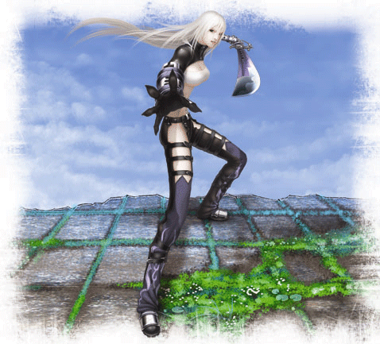
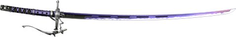

Nom: Celia
Lieux de Naissance: Inconnu
Style de combat: Séléné
Age: 18
Taille: 1m71
Poids: 51 Kg
Mensurations: Secrètes
Hobbies: Collectionner des belles choses

Tout ce qui concerne Celia est entouré de mystère y compris pour elle. Sans passé ni identité, la première chose dont elle se souvient de son enfance est d’avoir erré pendant des jours dans des lieux déserts jusqu’à tomber inconsciente. C’est à ce moment qu’elle fut découverte par une société secrète ancestrale qui comprit directement qu’elle était spéciale.
Ses sauveurs la récupérèrent aux portes de la mort, puis l’entrainèrent à devenir une arme vivante, une lutteuse parfaite qui dépassait de loin les limites humaines. Au début, Celia assimilait l'enseignement avec la dévotion d'un enfant essayant d'impressioner ses parents. Mais en grandissant, elle commença à se demander si ce qu'elle faisait était correct.
Finalement, le jour de ses seize ans, Celia fut envoyée pour éliminer un agent renégat qui avait trahit son organisation. Après une longue poursuite, elle arriva à le rattraper.
Malgré toutes ses capacités, Celia n’était pas un assassin. En le laissant s’échapper, elle comprit qu’elle ne pourrait jamais reprendre son ancienne vie et elle courut autant qu’elle put dans le but de trouver son passé, quelque chose qu'elle pourrait appeler sien et racheter ses péchés.
